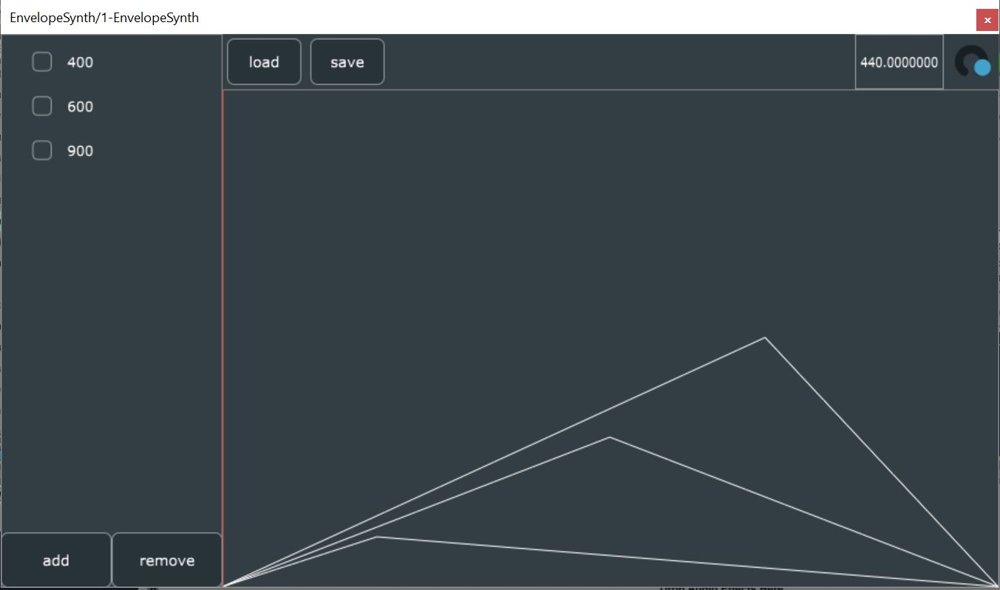

BloG
Additive VST Synthesizer Prototype : A Short Demo
October 11, 2020
During my time at The Recurse Center I was able to spend some time learning about audio programming. I dabbled in digital signal processing theory, Max/MSP, and TidalCycles for live coding, but the main focus of my time and energy was learning how to program VSTs in C++ with the JUCE framework.
As a capstone project, I developed an additive synthesizer VST with per-partial envelope control, and a Python interface for generating control data for the synth programatically. Below is a short video where I demo the synthesizer. The first part of the video is intended to show how the interface works, and the second part of the video shows a few interesting sounds I was able to make with the synth.
You may notice that the final sound that I demo in the video sounds a lot like a piano. I generated the control data for this sound by downloading a piano sample from the internet, and writing a Python script to analyze the sample and output control data for the synthesizer to immitate the sound. This is a technique called "Oscillator Bank Resynthesis", and I hope to cover it in more techniqual detail in a separate blog post; however, I think it demonstrates why it might be useful to have a Python interface on an additive synthesizer.
Writing control data to the synthesizer from Python is easy as I've written a package to handle implementation details. The following example program creates three partials, adds a control point to each partial, and writes the preset file to "controlData.ctl":
import EnvelopeSynth
e = EnvelopeSynth.EnvelopeSynth()
e.addPartial(400)
e.addPartial(600)
e.addPartial(900)
e.addPoint(0, 0.5, 0.3) #adds point to 400Hz partial at t=0.5 amplitude=0.3
e.addPoint(1, 0.2, 0.1)
e.addPoint(2, 0.7, 0.5)
e.save("controlData.ctl")You can then load the controlData.ctl preset in the synthesizer to get the following:
This synthesizer is still a prototype, and there are a few key features I'll need to add before I can share the project publically. If you're interested in this project, or have an idea for a feature, feel free to send me an email, and I'll definitely get back to you.